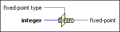

Integer to Fixed-Point Cast Function
Owning Palette: Fixed-Point Functions
Requires: Base Development System
Scales the integer input to produce an output with the requested fixed-point type. This function is the equivalent of an arithmetic shift of the input with configurable overflow handling, constrained so that the least significant bit of the input becomes the least significant bit of the output.

 Add to the block diagram Add to the block diagram |
 Find on the palette Find on the palette |